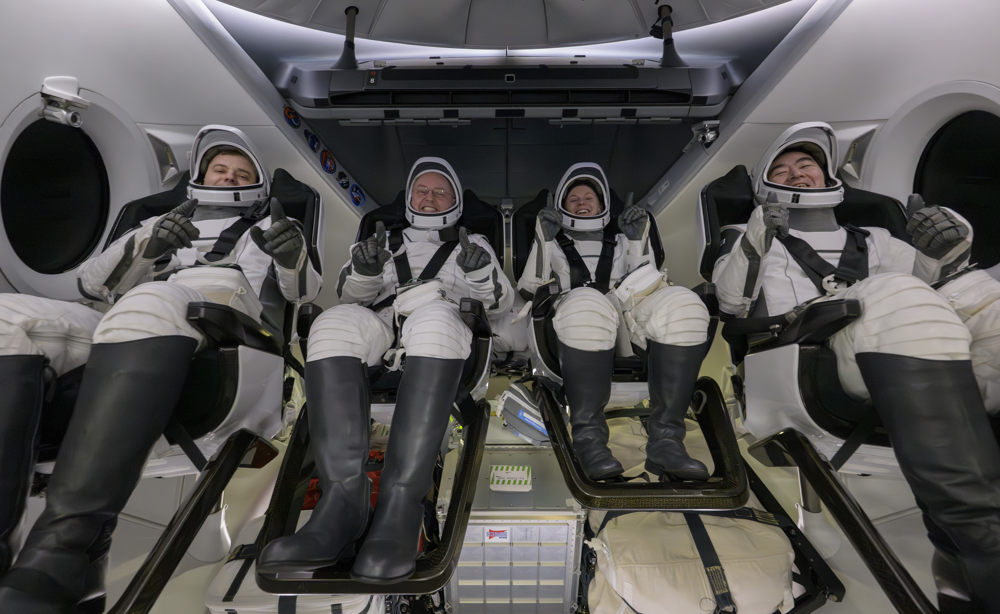

Il punto fermo di questa edizione
Questa monografia è aggiornata al 9 ottobre 2026. La data non è un dettaglio ornamentale. Crew Dragon è un programma operativo: una nave può partire mentre si completa un articolo, un equipaggio può tornare e una previsione può cambiare. Il racconto degli anni passati deve restare stabile; il registro e lo stato corrente devono dichiarare fino a quando sono stati controllati.
Il 1º ottobre Crew-13 è partita da SLC-40 con Jessica Watkins, Luke Delaney, Joshua Kutryk e Sergey Teteryatnikov. La missione utilizza Grace e ha raggiunto la stazione. Alla data di questa edizione è in corso: non le viene attribuito un rientro futuro come se fosse già avvenuto. Crew-12, con Jessica Meir, Jack Hathaway, Sophie Adenot e Andrey Fedyaev, è invece tornata l’8 ottobre, dopo una lunga permanenza.
L’immagine del programma è ormai distante dalla capsula presentata nel 2014. La nave che sembrava vicina e continuava a slittare è diventata una flotta, un sistema di trasporto e un elemento dell’organizzazione della presenza umana. Questo risultato non elimina la storia dei ritardi e della crisi. È proprio quella storia a spiegare quanto lavoro sia stato necessario per ottenere una disponibilità che oggi può sembrare ordinaria.
Un cambiamento industriale verificabile
Dragon ha dimostrato che un operatore commerciale può sviluppare e gestire, nel rapporto con una grande agenzia pubblica, il trasporto di equipaggi verso una stazione orbitale. L’autonomia del costruttore e le verifiche NASA non si sono escluse a vicenda. Hanno prodotto un sistema che deve continuare a rendere conto dei propri risultati.
La parola dominio, nel percorso storico generale di SpaceX, descriveva la crescita della capacità industriale del Falcon 9. Nel trasporto umano serve un metro più preciso. I volumi non sono quelli delle missioni Starlink; la responsabilità di ogni viaggio è diversa. Dragon ha assunto un ruolo essenziale nella disponibilità americana di trasporto orbitale, ma la centralità di un fornitore non deve diventare la convinzione che nessun altro mezzo sia necessario.
La presenza di sistemi alternativi conserva valore anche quando uno funziona molto meglio nella pratica operativa. Un guasto comune, una sospensione o un problema di produzione possono fermare più esemplari della stessa famiglia. La cooperazione internazionale e la diversità dei sistemi riducono la dipendenza da una sola soluzione. La storia di Crew-9 mostra la forza di una capacità disponibile, non l’inutilità delle alternative.
La domanda NASA continua, il futuro non è già un volo
Il 18 settembre 2026 la NASA ha assegnato a SpaceX tre missioni ulteriori, Crew-15, Crew-16 e Crew-17, attraverso una modifica del contratto. Il valore è di 946 milioni di dollari, comprensivo dei servizi di missione, e il periodo contrattuale arriva al 2030. L’agenzia indica prontezza delle missioni nel 2027 e nel 2028. Sono impegni di trasporto e pianificazione, non tre voli da aggiungere al registro.
Il valore totale del contratto CCtCap SpaceX sale così a 5,92 miliardi di dollari e il numero di missioni operative acquistate arriva a diciassette. Non è il prezzo di diciassette sole capsule: comprende sviluppo e servizi previsti nelle successive modifiche. Neppure dividere questa cifra per il numero di missioni fornirebbe automaticamente il costo di un posto per un astronauta.
Il nuovo acquisto conferma la necessità di continuità fino alla fine della vita prevista della ISS. Non autorizza a presumere che Dragon continuerà senza cambiamenti per decenni o che un nuovo sistema possa sostituirla appena annunciato. La transizione futura richiederà una capacità effettivamente disponibile, non soltanto un obiettivo industriale.
Il riuso è un programma, non una proprietà magica
Una capsula riutilizzabile non ha una vita infinita. Ogni missione consuma margini, sottopone parti a condizioni severe e lascia dati da esaminare. L’estensione del numero di voli o del tempo di permanenza richiede prove e accettazioni appropriate. Non è corretto prendere una capacità annunciata per il futuro e applicarla retroattivamente a tutte le navi della flotta.
La maturità può consentire processi più efficienti. Un’organizzazione che conosce il proprio hardware non deve imparare tutto da capo a ogni ritorno. Ma l’efficienza utile non consiste nell’abolire le domande. Consiste nel poterle affrontare con dati migliori, strumenti adeguati e una preparazione più controllata. La distinzione tra familiarità e verifica rimarrà decisiva finché ci saranno persone a bordo.
Lo stesso vale per il recupero a mare. Spostare operazioni e traiettorie, migliorare la gestione dei frammenti del trunk e coordinare le zone di ritorno significa continuare a sviluppare il sistema dopo l’entrata in servizio. La certificazione iniziale non ha congelato Dragon nel novembre 2020. Ha aperto una fase nella quale ogni cambiamento deve convivere con una macchina che trasporta già equipaggi.

Dragon non è la nave per Marte
Il successo di Crew Dragon non la trasforma nel mezzo destinato a trasferire grandi equipaggi verso Marte. È una nave concepita e sviluppata per missioni nell’orbita terrestre, con un ruolo specifico nel trasporto verso la stazione e nei voli autonomi finora realizzati. Le ambizioni interplanetarie di SpaceX appartengono a un’architettura diversa, che richiederà una monografia propria.
Esiste una relazione industriale: esperienza nel volo umano, controllo della cabina, addestramento, gestione dei ritorni e lavoro con NASA producono competenze. Non esiste invece una scorciatoia per certificare una nuova nave. Un sistema più grande, con profili di missione differenti, deve dimostrare le proprie capacità. Trasferire il prestigio di Dragon a un progetto futuro senza distinguere hardware e risultati sarebbe un errore.
Anche le future stazioni commerciali non possono essere trattate come destinazioni già disponibili solo perché esiste il trasporto. Devono essere costruite, messe in funzione e rese compatibili con i servizi previsti. Dragon può rappresentare una possibilità per quel mercato, ma la domanda futura dipenderà da infrastrutture, clienti e accordi ancora in evoluzione.
Un libro concluso nel percorso, aperto nei risultati
La storia generale di SpaceX si era fermata al Block 5 per una scelta editoriale: da quel punto la crescita si divide in programmi troppo grandi per essere raccontati soltanto come capitoli successivi della stessa linea. Crew Dragon è il primo percorso autonomo. Comprende le origini, il concetto, le prove, l’incidente e il servizio, senza costringere tutto dentro l’ultimo lancio.
Questa edizione ha un inizio e una conclusione leggibili. Rimane aperto il registro delle missioni e rimangono aggiornabili le parti che descrivono lo stato operativo. Un prossimo volo non deve obbligare a riscrivere l’indagine del 2019; una nuova capacità, se verificata, meriterà invece una spiegazione propria. È il modo di mantenere un piccolo libro vivo senza trasformarlo in una pagina di notizie mescolate.
Il risultato più importante non è che Dragon abbia fatto sparire ogni problema. È che una nave nata da un’esigenza politica e industriale abbia attraversato prove, revisioni e una crisi distruttiva fino a rendere ripetibile il viaggio delle persone. Il successo si vede nei lanci; la fiducia si costruisce anche nei giorni nei quali non si parte.
Fonti e stato corrente
- NASA, lancio Crew-13, 1º ottobre 2026.
- NASA, Crew-13 sulla stazione, 2 ottobre 2026.
- NASA, ammaraggio Crew-12, 8 ottobre 2026.
- NASA, registro dei veicoli della stazione.
- NASA, tre missioni contrattuali aggiuntive, 18 settembre 2026.
Non sono pubblicati calendari futuri come risultati acquisiti. Gli aggiornamenti successivi dovranno indicare una nuova data di verifica.